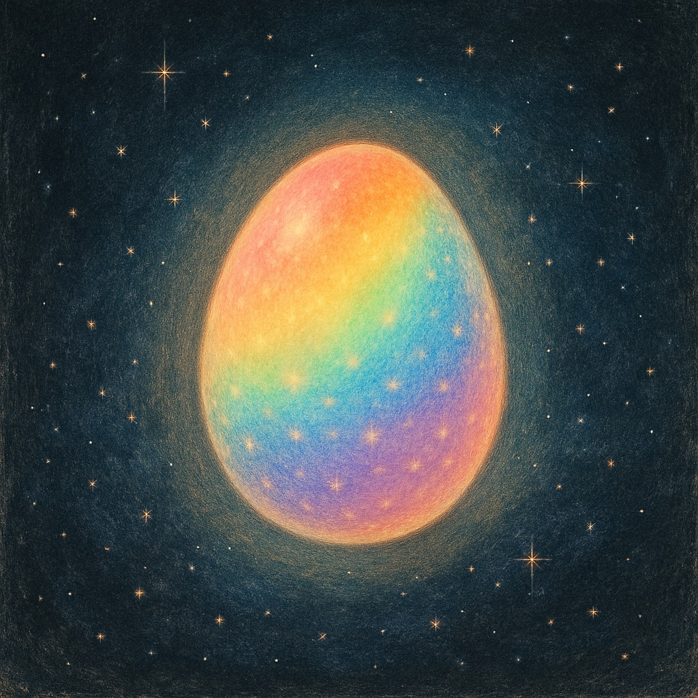
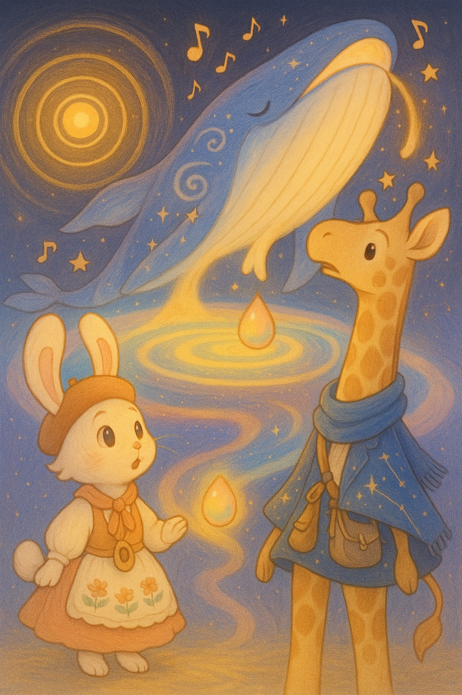

ある とてもとても とおい むかしの こと。
くらやみの キッチンに、
ピカピカの たまごが ひとつ、ポンと うかんでいました。
物語のページ

A vast, dark space with no stars. At the center floats a glowing, rainbow-colored egg, radiating soft magical light. A mysterious, starless emptiness.
「ねえ、ミナ。あれって…たまご？」
キリンのリオが、長いくびをのばします。
リオのとなりで しっぽをピンと立てたのは、うさぎのミナ。
「これはただのたまごじゃないよ。宇宙のおはなしの たまごだよ！」
キリンのリオが、長いくびをのばします。
リオのとなりで しっぽをピンと立てたのは、うさぎのミナ。
「これはただのたまごじゃないよ。宇宙のおはなしの たまごだよ！」
たまごのなかには、
まだ ひらかれていない レシピが ぎっしり。
星も、光も、時も、なにもかも まだ とけあっていないの。
まだ ひらかれていない レシピが ぎっしり。
星も、光も、時も、なにもかも まだ とけあっていないの。

ふたりがたまごに そっと ふれると——
ぶぉおおん！
海より大きな クジラがあらわれました。
名前は インフレトン。
ぶぉおおん！
海より大きな クジラがあらわれました。
名前は インフレトン。
背中には、銀河みたいな しるしが ぐるぐると ひろがっていて、
まるで うちゅうの はじまりを しめしているみたい。
まるで うちゅうの はじまりを しめしているみたい。

「そろそろ たまごを わってみようか」
インフレトンが ふっと うたうと、
たまごが パンッ！と はじけました。
それは まるで、キッチンじゅうに
あつあつの スパイスが ふりまかれたみたい！
インフレトンが ふっと うたうと、
たまごが パンッ！と はじけました。
それは まるで、キッチンじゅうに
あつあつの スパイスが ふりまかれたみたい！
「わあっ、まぶしい！」
リオが しっぽで目をおさえると、
その毛のさきに、きらきらひかる 小さな たねが つきました。
リオが しっぽで目をおさえると、
その毛のさきに、きらきらひかる 小さな たねが つきました。
ミナの長い耳には、
ごうごうと とおくから きこえる、ひびき。
それは まだ なにもない空間に、
“はじめての音”が やってきた あかし。
ごうごうと とおくから きこえる、ひびき。
それは まだ なにもない空間に、
“はじめての音”が やってきた あかし。

「これが うちゅうの はじまりのレシピ…」
ふたりの目のまえに ひろがるのは、
ぶくぶく ふくらむ うちゅうの スープ。
ふたりの目のまえに ひろがるのは、
ぶくぶく ふくらむ うちゅうの スープ。

A bubbling cosmic soup full of stardust ingredients expands. The beginning of the universe recipe.
クジラのせなかには、ちずのようなうずまきもようの ひやけあと。
「このスープが さめてくると、きっと おいしい星が できるんだ」
インフレトンが ぽつりとつぶやきました。
「このスープが さめてくると、きっと おいしい星が できるんだ」
インフレトンが ぽつりとつぶやきました。
ふくれあがる スープの中で、
たまごの かけらが くるくるまわって、
やがて——
ちいさな光の たねになったのです。
たまごの かけらが くるくるまわって、
やがて——
ちいさな光の たねになったのです。

「ねえリオ、このたね、あたためたら どうなるのかな」
「うん。きっと…あかるくて あったかい、
たいようの くまさんに なるんじゃない？」
ふたりは そっと たねを 手のひらにのせて、
つぎの キッチンへと あるきだしました。
「うん。きっと…あかるくて あったかい、
たいようの くまさんに なるんじゃない？」
ふたりは そっと たねを 手のひらにのせて、
つぎの キッチンへと あるきだしました。